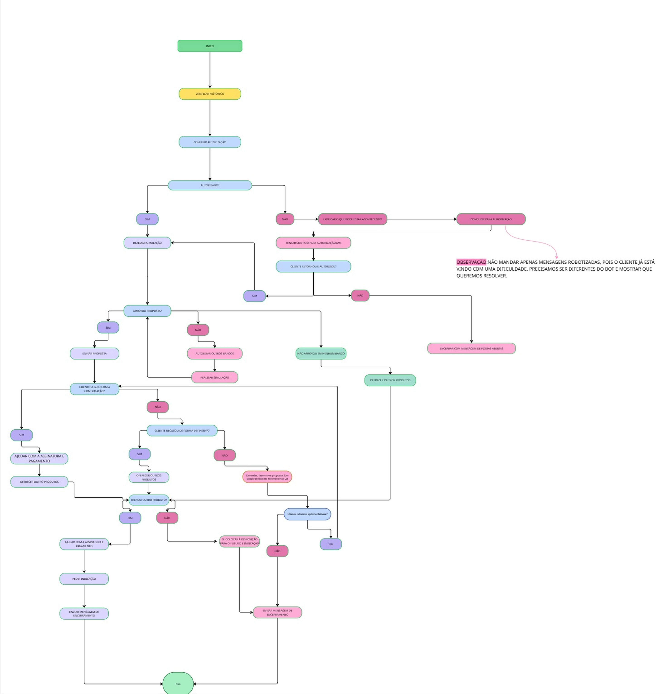

Ativa
Ilha 1 — Sem Autorização
Fluxograma para atendimentos relacionados à falta de autorização da proposta pelo cliente.
Escolha uma ilha para estudar o fluxo de atendimento.
Fluxograma para atendimentos relacionados à falta de autorização da proposta pelo cliente.
Fluxograma para atendimentos e tratativas de operações com garantia do FGTS.
Fluxograma para análise e resolução de propostas com pendências durante o processo.
Fluxograma com os principais processos e procedimentos realizados pelo time de Suporte.
Fluxograma do atendimento para operações do projeto CLT Piloto.
Fluxograma para atendimentos de clientes que demonstraram interesse em contratar.
Fluxograma do atendimento padrão para operações de Crédito do Trabalhador (CLT).
Visualize o fluxograma oficial incorporado diretamente do Miro.
